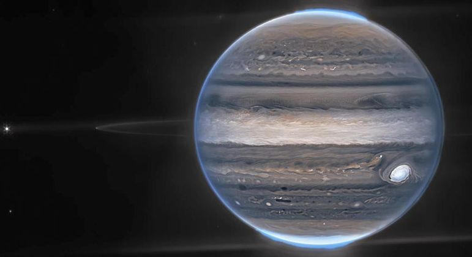
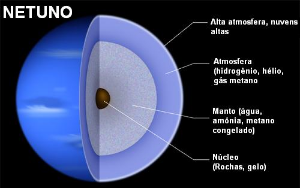
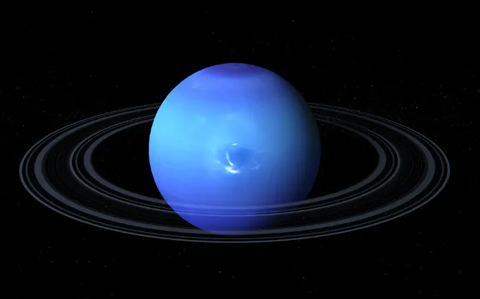

Netuno
O Gigante Azul do Sistema Solar
Netuno é um planeta que desperta curiosidade e fascínio. Apesar de ser o planeta mais distante do Sol em nosso sistema solar, Netuno pode ser observado da Terra a olho nu, embora seja muito fraco e difícil de distinguir sem a ajuda de um telescópio. Ele se parece com uma estrela distante e é mais visível durante certos períodos do ano quando está em oposição ao Sol, o que significa que está do lado oposto do céu em relação à nossa estrela. Seu nome é uma homenagem ao deus romano do mar, Poseidon, devido à sua coloração azul profunda.
Grandes Manchas e Anéis
Uma das características mais marcantes de Netuno é a presença de manchas escuras em sua atmosfera, semelhantes à Grande Mancha Vermelha de Júpiter. A maior dessas manchas é conhecida como a "Grande Mancha Escura" e é acompanhada por ventos violentos que podem atingir velocidades de até 2.000 km/h.
Netuno também possui anéis, embora sejam muito menos impressionantes do que os anéis de Saturno. Eles são compostos por partículas de gelo e poeira e são difíceis de ver a partir da Terra.
Magtenosfera
Netuno possui uma magnetosfera poderosa, que é significativamente inclinada em relação ao seu eixo de rotação. Isso cria uma intensa aurora no planeta, semelhante às auroras terrestres, mas muito mais dramáticas.
Composição Química
A composição química de Netuno é complexa e intrigante. Sua atmosfera é majoritariamente composta por hidrogênio (cerca de 80%) e hélio (cerca de 19%), o que o classifica como um gigante gasoso. No entanto, a atmosfera de Netuno também contém pedaços de metano, que é responsável por sua coloração azul profunda.
Além desses elementos principais, a atmosfera de Netuno abriga traços de outros compostos, como água, amônia e sulfeto de hidrogênio. Esses elementos importantes para a complexidade da atmosfera e para as características climáticas notáveis do planeta, incluindo suas famosas manchas escuras e ventos extremamente rápidos.
Curiosidades
Planeta Mais Distante: Netuno é o planeta mais distante do Sol em nosso sistema solar. Leva cerca de 164,8 anos terrestres para completar uma única órbita ao redor do Sol.
Gigante Gelado: embora seja chamado de "gigante gasoso", Netuno é composto principalmente por materiais gelados, como água, amônia e metano, em vez de gases.
Luas Intrigantes: Netuno tem pelo menos 14 luas conhecidas, sendo a maior delas Tritão, que tem órbita retrógrada, ou seja, gira na direção oposta à rotação do planeta. Isso sugere que Tritão pode ter sido capturada pela gravidade de Netuno em algum momento.
Futuro da Exploração: embora não haja missões tripuladas planejadas para Netuno no momento, a pesquisa e a exploração do planeta continuam a ser tópicos emocionantes para a comunidade científica. Novas missões espaciais podem fornecer mais insights sobre este mundo misterioso.
